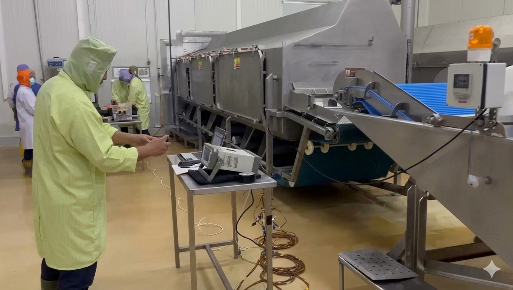
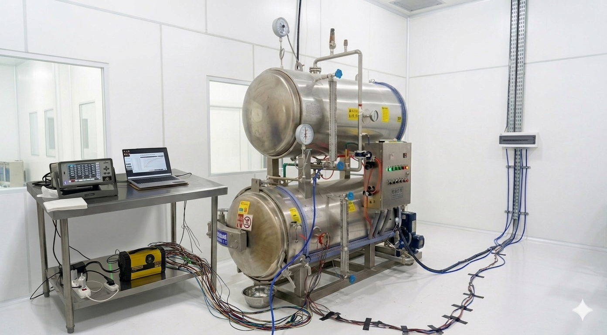
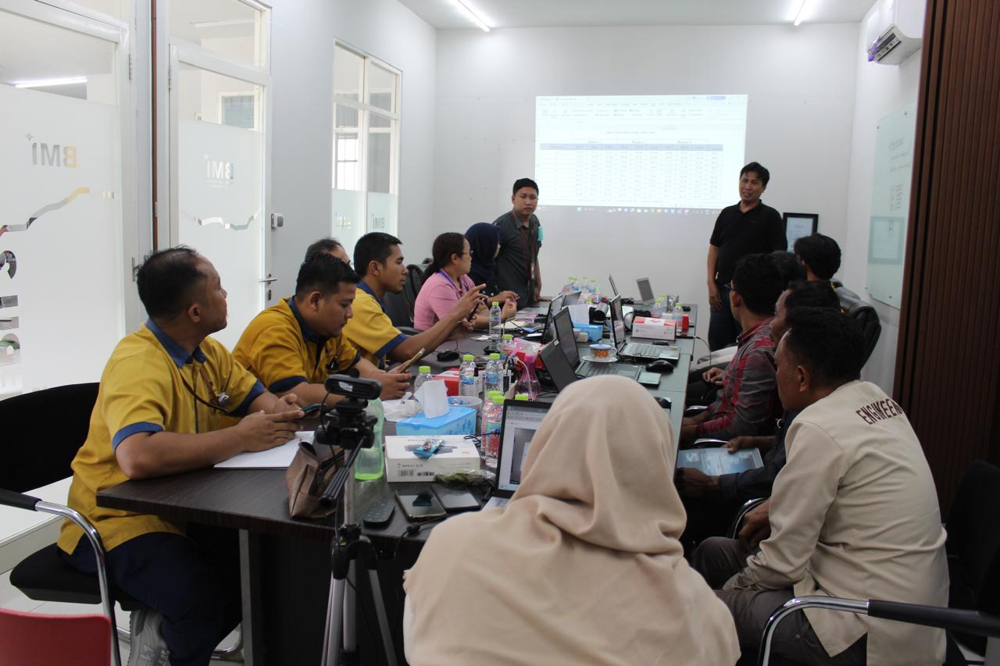
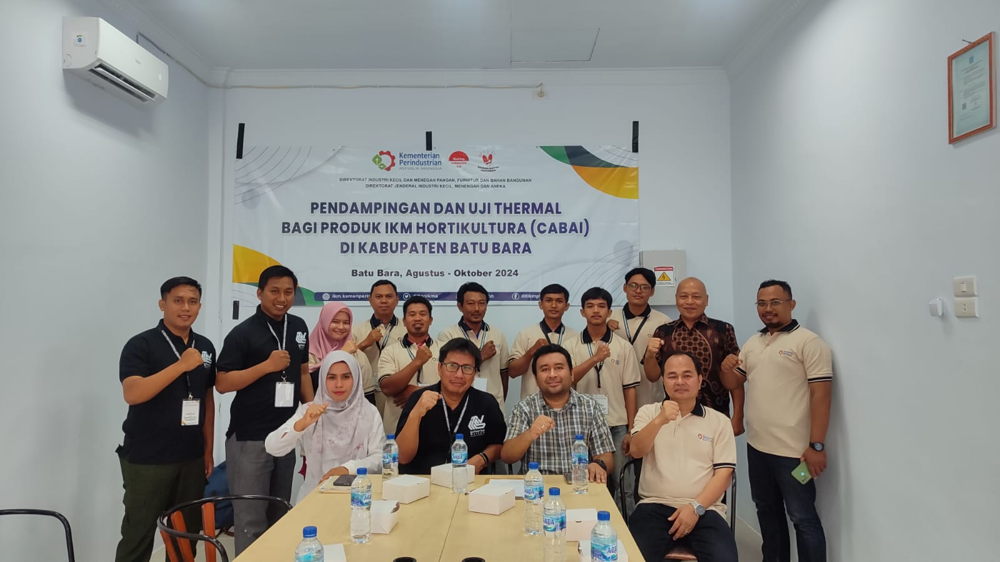
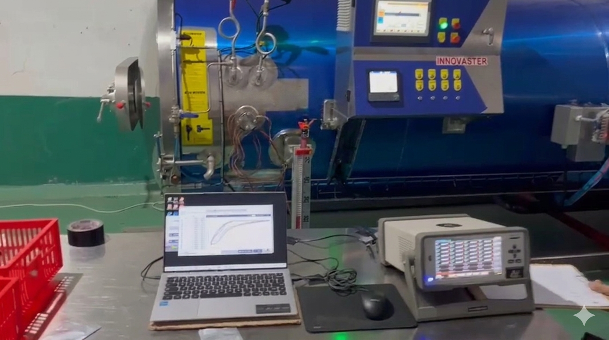
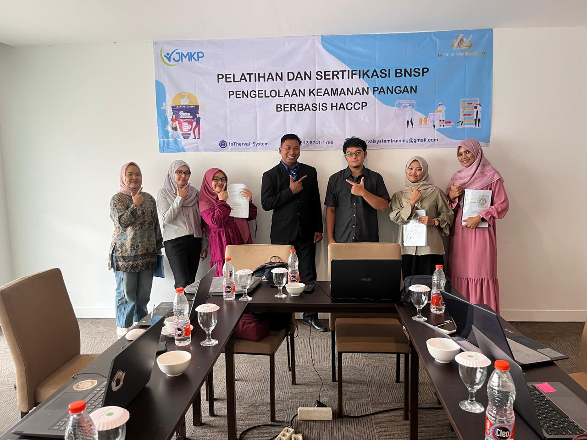
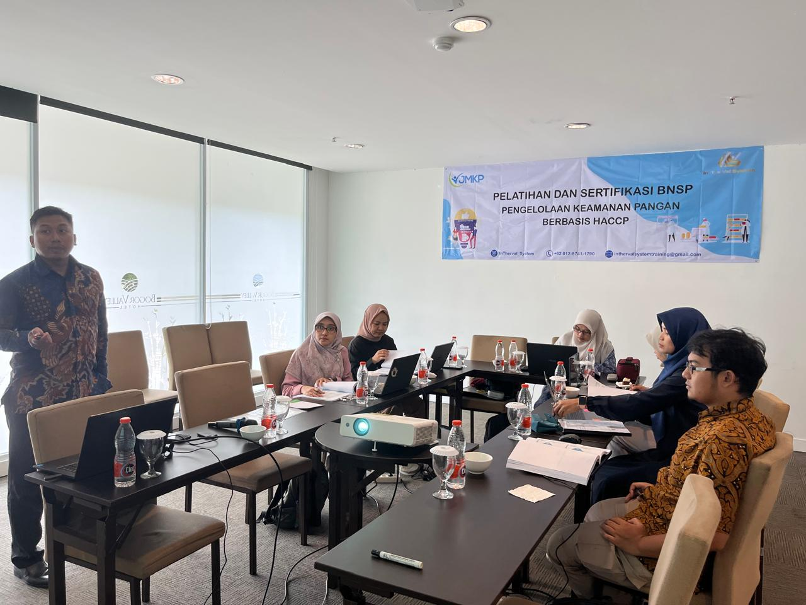
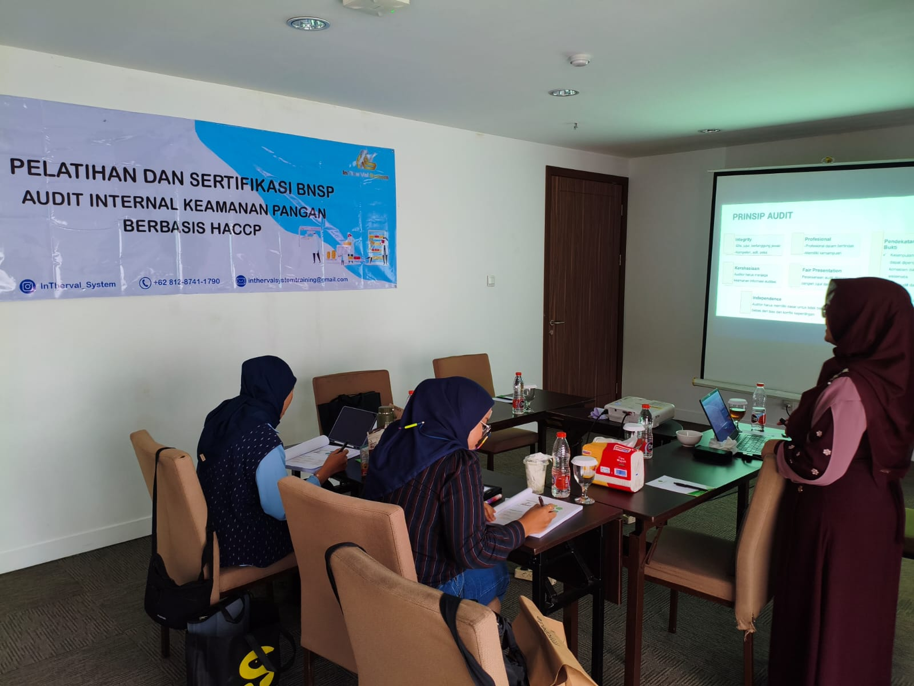
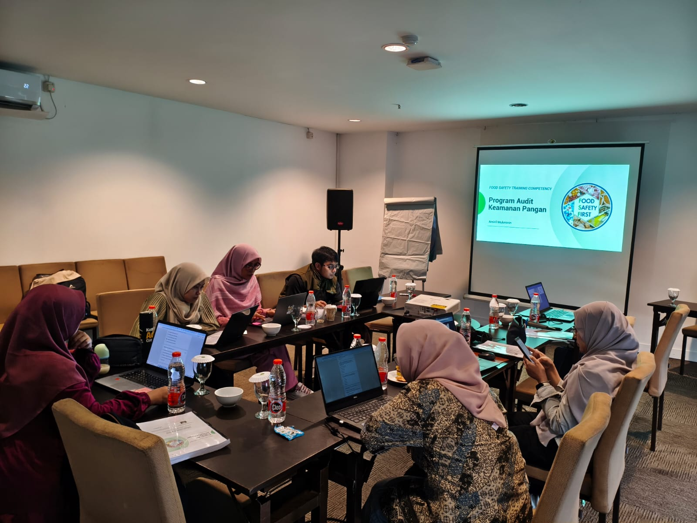

Thermal Process Validation & Food Safety Solutions
Trusted Partner for Thermal Processing Excellence
CV. InTherVal Sistem membantu industri pangan menghasilkan produk yang aman, berkualitas, dan memenuhi standar keamanan pangan melalui pendekatan ilmiah dan berbasis data.
Real-time
Hasil pengujian ditampilkan saat proses berlangsung.
Data Akurat
Nilai F0 dan pasteurization value langsung diperoleh saat pengujian.
Terkalibrasi
Peralatan terkalibrasi, tertelusur, dan siap mendukung audit.
Berpengalaman
Tim validator dan trainer berpengalaman di industri pangan.
About Us
CV. InTherVal Sistem
CV. InTherVal Sistem didirikan dengan komitmen untuk membantu industri pangan menghasilkan produk yang aman, berkualitas, dan memenuhi standar keamanan pangan melalui pendekatan ilmiah dan berbasis data.
Sebagai mitra industri, kami menyediakan layanan Thermal Process Validation, Food Safety Training, serta Technical Consultation yang dirancang untuk membantu perusahaan dalam mengembangkan, mengevaluasi, dan mengoptimalkan proses termal secara efektif dan terukur.
Dengan pengalaman dalam berbagai aplikasi proses sterilisasi, pasteurisasi, dan pemasakan (cook value) pada produk pangan, CV. InTherVal Sistem terus berupaya menjadi mitra terpercaya bagi industri dalam menciptakan proses produksi yang aman, efisien, dan sesuai dengan perkembangan standar nasional maupun internasional.
Visi
Menjadi perusahaan terdepan dan terpercaya.
Menjadi perusahaan terdepan dan terpercaya dalam bidang validasi proses termal, pendampingan proses termal, dan food safety training, yang berkontribusi nyata dalam menciptakan produk pangan yang aman, berkualitas, dan kompetitif di tingkat global.
Misi
Nilai Kami
Prinsip kerja dalam setiap layanan.
Integritas
Bertindak jujur, profesional, dan bertanggung jawab dalam setiap layanan yang kami berikan.
Kolaborasi
Bekerja bersama klien sebagai mitra untuk mencapai tujuan bersama.
Kompetensi & Inovasi
Terus belajar dan mengembangkan diri untuk memberikan hasil terbaik.
Our Services
Layanan terintegrasi untuk proses termal dan keamanan pangan.
Kami menyediakan layanan terintegrasi untuk memastikan proses termal dan sistem keamanan pangan Anda berjalan optimal, aman, dan sesuai standar mutu yang ditetapkan.
Thermal Process Validation
- Validasi F0 Sterilisasi Komersial - validasi nilai F0 untuk memastikan proses sterilisasi komersial mencapai tingkat keamanan yang disyaratkan.
- Validasi P0 Proses Pasteurisasi - validasi nilai P0 untuk menjamin proses pasteurisasi efektif menonaktifkan mikroorganisme patogen.
- Validasi Cook Value - validasi nilai cook value untuk menjamin proses pemasakan efektif menonaktifkan mikroorganisme patogen.
Thermal Process Consulting
- Retort Optimization - optimasi proses retort untuk mencapai efisiensi, konsistensi, dan keamanan produk.
- Process Improvement - identifikasi peluang perbaikan untuk meningkatkan performa proses termal Anda.
- Thermal Process Troubleshooting - analisis dan solusi masalah proses termal secara menyeluruh dan tepat sasaran.
- Product Development Support - dukungan teknis dalam pengembangan produk baru berbasis proses termal.
Food Safety Training
- Thermal Process Training - pelatihan komprehensif mengenai prinsip validasi, pengoperasian retort, dan thermal authority.
- GHP and HACCP Competency Training - pelatihan untuk meningkatkan kompetensi dalam penerapan GHP dan Sistem HACCP.
- Quality Management System Training - pelatihan sistem manajemen mutu keamanan pangan seperti BRC, ISO 22000, FSSC 22000, dan standar lain.
Why Choose Us
Keunggulan layanan CV. InTherVal Sistem.
- Hasil pengujian ditampilkan secara real-time.
- Nilai F0 dan pasteurization value langsung diperoleh saat pengujian.
- Perhitungan beberapa target mikroba sekaligus.
- Analisis cook value untuk menjaga mutu produk.
- Menentukan suhu dan waktu proses yang optimal.
- Identifikasi cold spot dan worst-case condition.
- Peralatan terkalibrasi dan tertelusur.
- Mendukung audit, HACCP, dan persyaratan regulator.
- Cocok untuk pengembangan produk baru dan revalidasi.
- Tim validator dan trainer berpengalaman di industri pangan.
Project Experience & Documentation
Dokumentasi proyek, partner, dan klien.
Telah menangani berbagai proyek validasi dan pendampingan proses termal untuk berbagai jenis produk dan industri.










Testimoni
Testimoni Uji Validasi Intherval System
Get In Touch
Kami siap menjadi mitra terpercaya perusahaan Anda.
Kami membantu memastikan proses termal yang aman, efektif, dan sesuai standar.